The Basics to Excel at Excel
Emphasis on the maths
![]()
Friday, the 27th of September, 2024
Overview
- Excel software
- math and calculations
- basic graph reading
Excel software
- Basic software usage
- Basic arithmetic
- Basic function use
Excel an “easy” entry point to data analysis
Basic software usage
What is Excel(pronounced “Eks-sel”)?
Excel (and any spreadsheet program) allows for easy entry of data, analysis, and visualization
This is proprietary software typically provided by your employer or university
To begin,
open Excel on your device
log into office.com
Excel is overwhelming on first use
Basic software usage
The ribbon is a set of tabs that are groups of commands to provide short cuts to the user.
The sheet is a named spreadsheet containing cells that allow input, arithmetic, and functions in the formula bar.
{kind=link}
Adding some data into the sheets is easy
Basic Software Usage
Navigate with tab, enter, arrow keys, left-clicking, the Name Box
Input new information in selected cell by typing in the cell or the Formula Bar
Moving cells by Dragging and Dropping
Basic Software Usage
Highlight a single cell or group of cells
Hover your cursor over the green border until the cursor changes
left clickanddragto destination cellRelease the click on destination cell
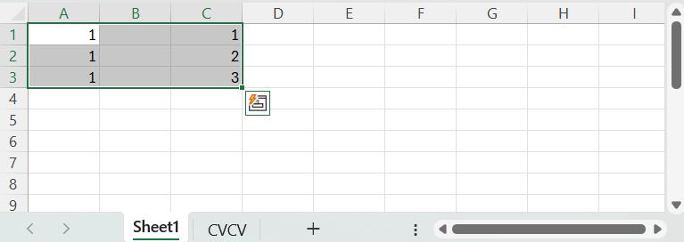
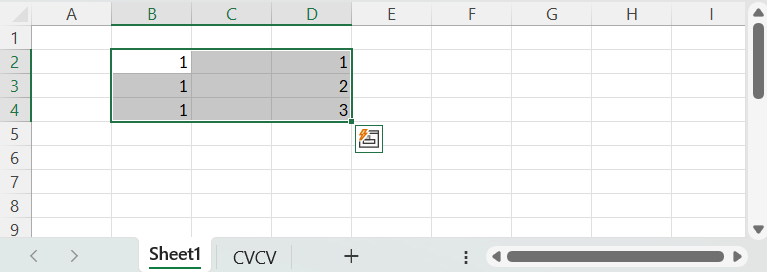
Moving cells by Cutting and Pasting
Basic Software Usage
Highlight a single cell or group of cells
Right clickand selectCut(orctrl+x)Right clickthe destination cell for the upper left cell (orarrow keys)Select a command in the
Paste Options:
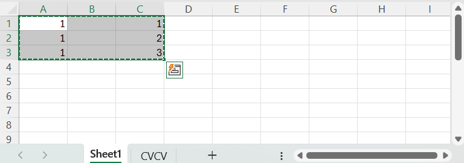
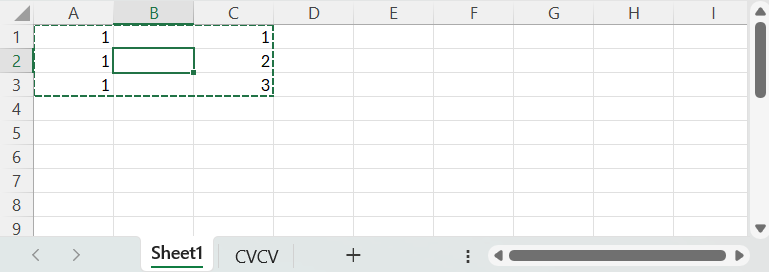
Deleting entire columns or rows
Basic Software Usage
Highlight a single column/row or group of columns/rows
Right clickand selectDelete
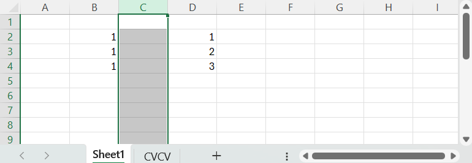
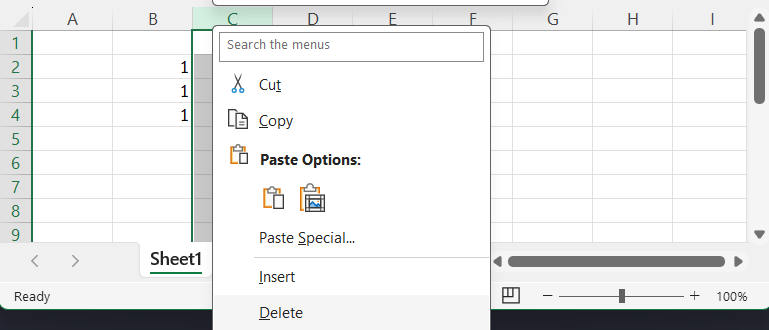
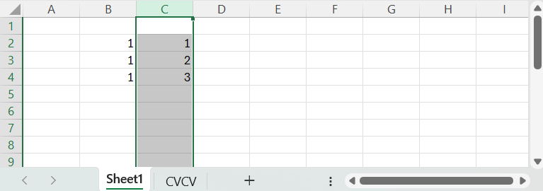
Adding entire columns or rows
Basic Software Usage
Highlight a single column/row or group of columns/rows
Right clickand selectInsert
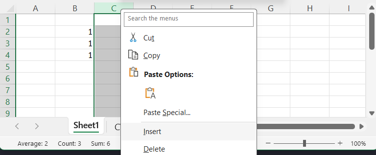
Undo and redo can be the most important things to remember!!!
Undo with
ctrl-zor the reverse arrowRedo with
ctrl-yor the forward arrow
Basic arithmetic
- Formulas
- Sequences
- Functions
Arithmatic starts with a formula
Formulas
- formulas start with
= - integers, floats/rational, cells
- addition (+), subtraction (-), multiplication (*), division (/)
- parentheses == order of operation
$pins a column or row identity (i.e.$A$1)
Quickly creating a uniform sequence
Sequences
For a constant sequence,
- input at least one value in a column
- click the lower right green box on the cell
- drag to the desired sequence length
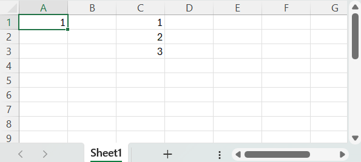
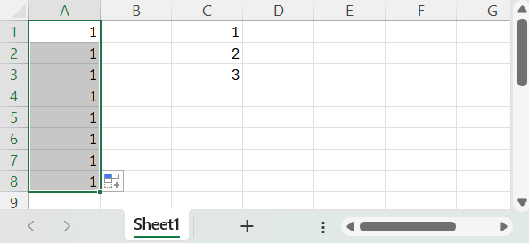
Quickly creating a linear sequence
Sequences
For a linearly increasing sequence,
- input at least two increasing integers in a column
- click the lower right green box on the cell
- drag to the desired sequence length
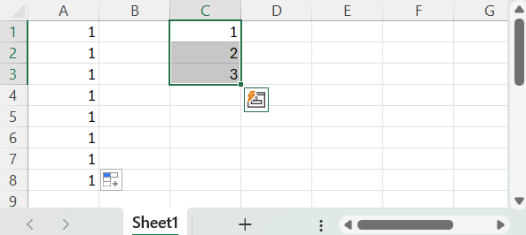
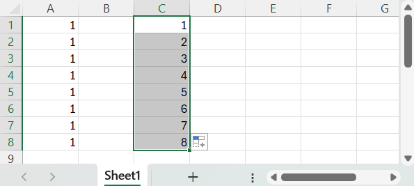
Quickly creating a sequence is simple, but…
Sequences
What about:
- A linearly increasing sequence of values greater than 1?
- A sequence of even integers?
- A sequence of odd integers?
- A linearly decreasing sequence?
- A nonlinear, exponential sequence?
- A alternating sequence?
Graphing linear sequences
Sequences and Graphing
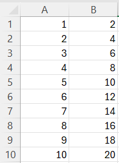
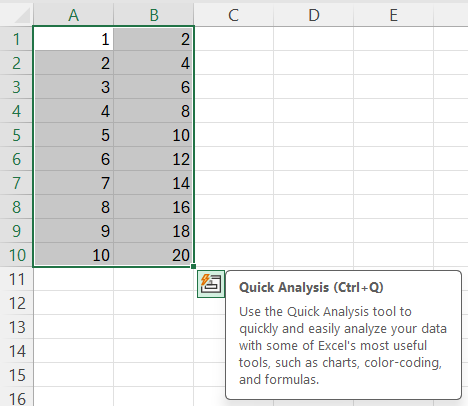 Select data cells > Insert Tab > Charts Group > Select the dropdown for the specific chart type
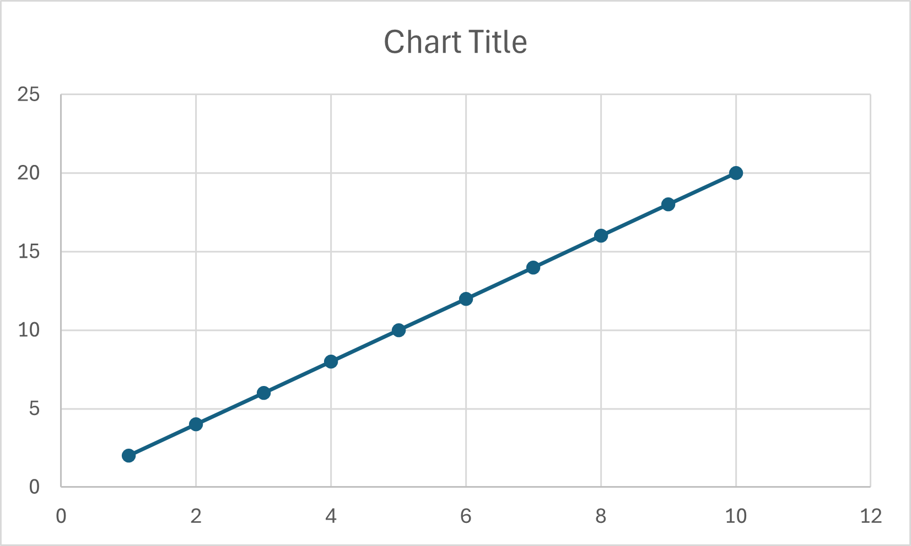
Adding and editing graph chart elements
Sequences and Graphing
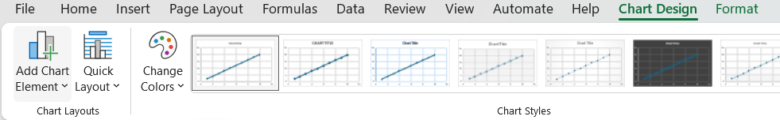
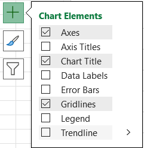
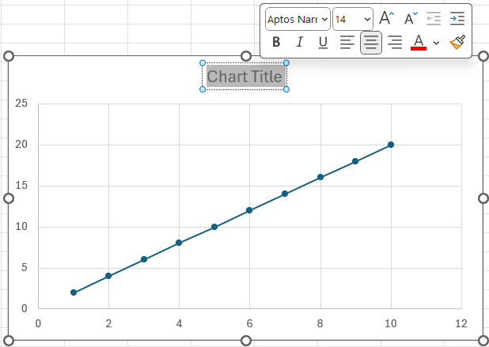
Adding trendline, equation, and \(R^2\)
Sequences and Graphing
- Click
trendlinein either chart elements popup or group
Click
More optionsorMore Trendline OptionsClick on
Linear,Line equation, and \(`R^2`\) value
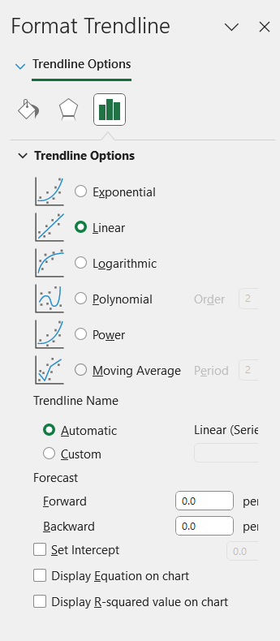
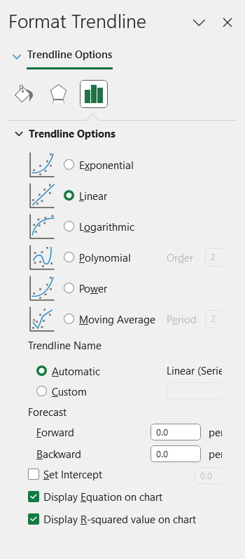
Complete linear sequence graph
Sequences and Graphing
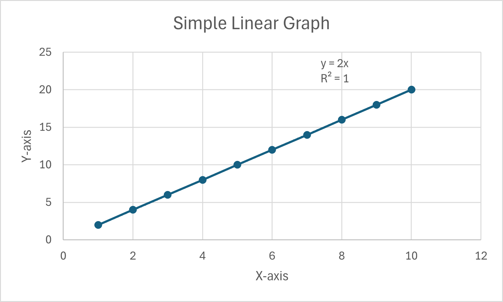
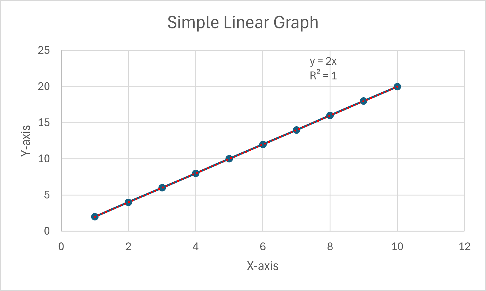
Graphing quadratic sequences
Sequences and Graphing
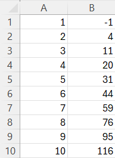
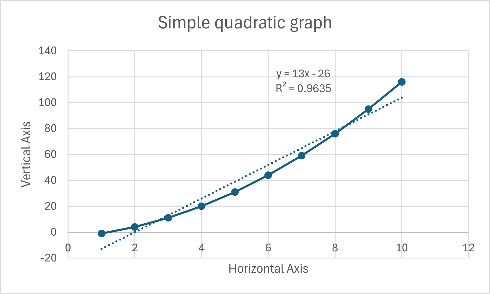
Graphing an actual sequences
Sequences and Graphing
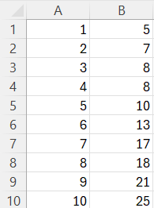
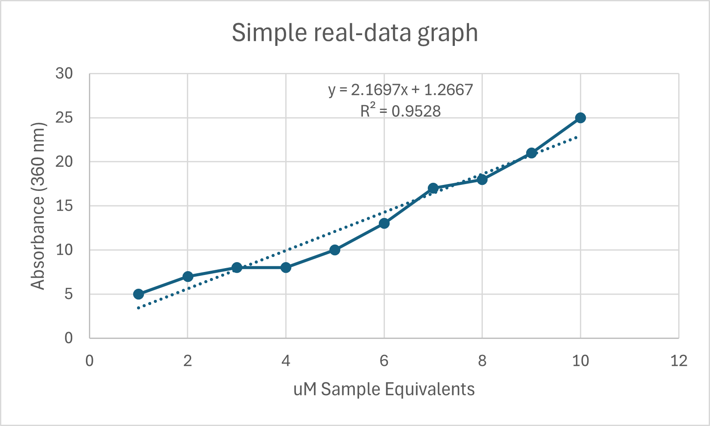
Graphing random sequences
Sequences and Graphing
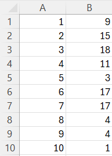
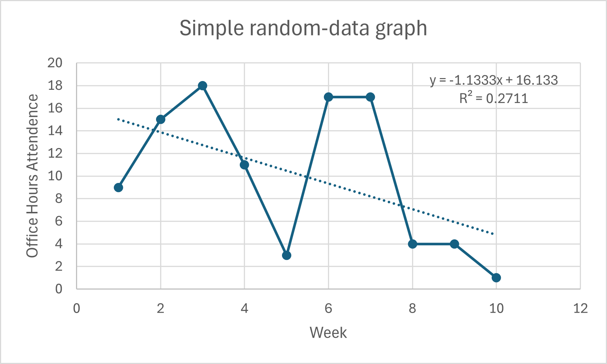
Functions can allow you to simplify your formula
Functions
- There are hundreds
- Covering arithmetic, stats, logic, strings, dates, etc.
=SUM(A1:A5)===A1+A2+A3+A4+A5
Combine everything into a simple example?
\(C_1\times{}V_1=C_2\times{}V_2\)
\[ \frac{ C_1 V_1 }{ C_2 V_2 } \]
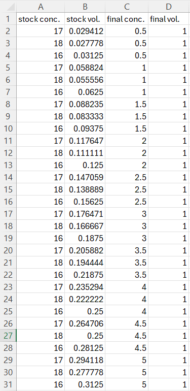
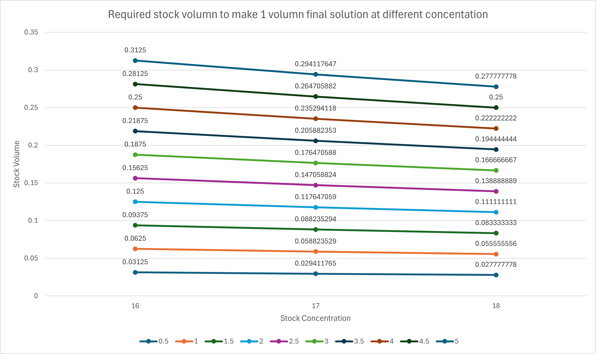